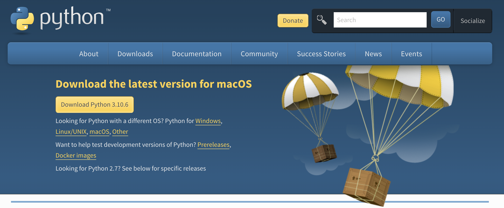

Chapter 8 Tech Tips
8.1 Software Preperation
In the summer semester, you will need to use Python, Excel, RStudio, and GitHub in MBAn 550, MBAn 551,
MBAn501 respectively. Since many students from the first cohort had not used these tools before, learning how to set up the environment and use the software caused much headache among us. So our advice for incoming students who has little experience in these tools is to try to set up the environment and familiarize yourself with the tools before the summer session begin.
### Python Preperation
To set up Python correctly in your computer, you should first download the latest version of the programming language from the official website.

Then you will need a code editor to write code and manage your files. We recommend using Visual Studio Code because of its simplicity and popularity (Don’t confuse it with Visual Studio, it’s two different things! Visual Studio has a purple icon while VS Code has a blue icon). You can download the latest version from here.

Thirdly, don’t confuse python file with a jupyter notebook. You can distinguish the two different files by looking at the file name extension. Python is ended with .py while Jupyter Notebook is ended with .ipynb. In MBAn 550, we will primarily work with pure python file.
8.1.1 Excel Preperation
In MBAn 551, we will learn about the advanced functions about Excel. But first make sure you have the latest version of the Microsoft 365. UM students have free access to the office suite, and you can download from here.
However, keep in mind that some functions are not support in the Mac version of the Excel, so Mac users will need to use Ross Anywhere to access the virtual PC machine to use the Excel Windows version.
8.1.2 Git and GitHub
Git and GitHub are two different things. Git is a version control system while GitHub is a cloud platform that hosts service for software development and version control using Git. If you are new to Git, it can be very difficult to understand its logic and navigate the different Git commands. You may find the crash course and the Git cheat sheet to be helpful.
8.1.3 R & RStudio
R and RStudio is similar to Python and VS Code. R is a language and environment for statistical computing and graphics while RStudio is a code editor to write R scripts. In MBAn501, you will primarily working with RMD files in RStudio. RMD file lets you interact with the code you write and is similar to jupyter notebook file.
During the course, you will also need to learn to use git in RStudio to work on the project with your teammates. You can glance through the official documentation and checkout some of the tutorials on Youtube like this one